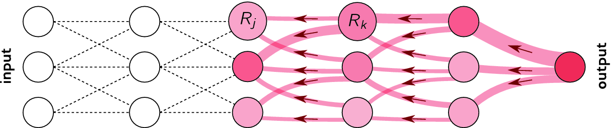
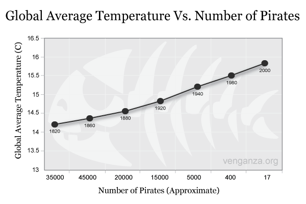

Limits of deep learning
Work in progress.
The AI hype and general artificial intelligence
“Intuition, insight, and learning are no longer exclusive possessions of human beings: any large high-speed computer can be programed to exhibit them also.”
Herbert Simon, MIT, Nobel Prize, Turing award, 1958.
It is not the first time in history that the field of Artificial Intelligence pretends to be just a few years away from a true general artificial intelligence.
Based on the progress allowed by deep learning, recent declarations are of the same essence:
“If a typical person can do a mental task with less than one second of thought, we can probably automate it using AI either now or in the near future.”
Andrew Ng, Stanford University, Google Brain / Baidu, 2016.
“The development of full artificial intelligence could spell the end of the human race… It would take off on its own, and re-design itself at an ever increasing rate. Humans, who are limited by slow biological evolution, couldn’t compete, and would be superseded.”
Stephen Hawking, Cambridge University, 2014.
“Artificial intelligence will reach human levels by around 2029. Follow that out further to, say, 2045, we will have multiplied the intelligence, the human biological machine intelligence of our civilization a billion-fold.”
Ray Kurzweil, Google, 2017.
The reasoning is that if technological progress continues at its current rate, it will increase exponentially. Artificial Intelligence will soon reach the human intelligence level: this is the singularity. Past that point, super artificial intelligence will be infinitely more intelligent than humans. Skynet syndrome: Will machines still need us after the singularity? Kurzweil and colleagues argue for transhumanity, i.e. the augmentation of human intelligence by super AI.
The singularity hypothesis relies on an exponential increase of computational power. Moore’s law (the number of transistors in a dense integrated circuit doubles about every two years) is the only known physical process following an exponential curve, and it is coming to an end.

But is scientific knowledge exponentially increasing?
“Max Planck said, ‘Science progresses one funeral at a time.’ The future depends on some graduate student who is deeply suspicious of everything I have said”
Geoffrey Hinton, Univ. Toronto, 2017.
Is the current deep learning approach taking all the light, at the expense of more promising approaches? Science progresses with breakthroughs, which are by definition unpredictable. Serendipity (luck + curiosity) is at the heart of scientific discoveries (gravity, microwaves, etc).
Current limitations of deep learning
Data is never infinite
Deep networks are very powerful and complex models, which tend to overfit (bad interpolation). They learn their parameters from the training data only:


Datasets for deep learning are typically huge:
- ImageNet (14 million images)
- OpenImages (9 million images)
- Machine Translation of Various Languages (30 million sentences)
- Librispeech (1000 hours of speech)
- …
The deeper your network, the more powerful, but the more data it needs to be useful. Solutions: data augmentation, transfer learning, unsupervised pre-training…
Deep Reinforcement Learning has the same sample complexity problem: it needs many trial-and-errors to find a correct behavior. DQN and its variants need 200 million frames to learn to play Atari games: 38 days of uninterrupted human playing… On December 18th 2018, Google Deepmind defeated the human team “Mana” on Starcraft II, a much more complex game than Go for computers.
“The AlphaStar league was run for 14 days, using 16 TPUs for each agent. During training, each agent experienced up to 200 years of real-time StarCraft play.”
Source: https://deepmind.com/blog/alphastar-mastering-real-time-strategy-game-starcraft-ii/
Computational power and energy

The computational power needed by deep networks increases exponentially: more layers, more parameters, more data, more everything. Training modern deep networks is now out of reach of most universities / companies. GPT-3 (OpenAI) was trained on 500B words (Wikipedia, Common Crawl) and has 175B parameters. Training it on a single V100 would take 355 years and cost 4.6 M$ in the cloud.
Inference times (making a prediction after training) become prohibitive: it is hard to use deep networks on low-budget hardware such as smartphones or embedded hardware (FPGA, DSP), computations must be deported to the cloud. Can’t we make the networks smaller after training?
Quantization
NN require single or double-precision floating numbers (32 or 64 bits) to represent weights during learning, as small learning rates are used (e.g. 10^{-5}) to add very small quantities to them. After learning, do we need such a high precision? 2.378898437534897932 \approx 2.4
Quantization consists of transforming the weights into 8-bits integers or even 1 or 2 bits (binary networks) without losing (too much accuracy). Frameworks such as Tensorflow Lite, TensorRT or PyTorch allow to automatically apply quantization on pretrained networks and embed, or even to use Quantization-aware training (QAT). See https://arxiv.org/pdf/2004.09602.pdf for a review.

Pruning
Another technique to reduce inference times by making the networks smaller is pruning: removing weights, filters, neurons or even layers that are not necessary after learning.
NN need a lot of weights/neurons to find the solution (training), but not obligatorily to implement it. Several metrics or techniques can be used to decide whether or not to keep parameters:
- thresholds
- redundancy
- contribution to loss
Some methods iteratively re-train the network after pruning, leading to reductions up to 90%. See https://link.springer.com/article/10.1007/s10462-020-09816-7 for a review.

Model distillation
In model distillation (Hinton et al., 2015), the deep teacher learns to perform classification on the hard one-hot encoded labels. Its knowledge can be transferred (distilled) to a shallower network. The shallow student learns to perform regression on the logits \mathbf{z} of the softmax output of the teacher, which is easier and leads to the same accuracy!
y_j = P(\text{class = j} | \mathbf{x}) = \mathcal{S}(z_j) = \frac{\exp(z_j)}{\sum_k \exp(z_k)}
Logits carry information about the similarity between classes: cats are closer to dogs than to cars. See (Gou et al., 2020) for a review.

Data is biased
Deep networks only learn from data, so if the data is wrong or biased, the predictions will reproduce it.
Scenario 1: you use AI to sort CVs based on how well your previous employees performed.
- If you only hired white middle-aged men in the past, the AI will discard all the others. (Amazon)
Scenario 2: you use AI to predict whether an individual is likely to commit a crime based on population statistics.
- Black people are 37% of the incarcerated population in the US, but only 12% of the population. Black people will be overly tagged as potential criminals. (DoJ)
Scenario 3: You train your speech recognition system on male American voices.
- You will not recognize female voices or foreign accents well (everybody).
Scenario 4: You create an AI chatbot on twitter, “Tay.ai”, learning from conversations with the twitter crowd.
- The chatbot became in hours a horrible sexist, racist, homophobic monster (Microsoft).
AI bias is currently taken very seriously by the major players. Sources: https://www.fastcompany.com/40536485/now-is-the-time-to-act-to-stop-bias-in-ai, https://www.weforum.org/agenda/2019/01/to-eliminate-human-bias-from-ai-we-need-to-rethink-our-approach/
Adversarial attacks
One major problem of deep networks is that they are easy to fool.

Instead of searching for the weights which produce the right output for a given image (training), you search for the image that produces a different output for a given set of trained weights (adversarial attacks, (Goodfellow et al., 2015)). It turns out that a minimal change on the input image is enough to completely change the output of a trained network. Using neural networks everywhere (self-driving cars, biometric recognition) poses serious security issues which are unsolved as of now. Many different attacks and defenses are currently investigated https://arxiv.org/pdf/1712.07107.pdf.
Let’s suppose we have a network trained to recognize cats from dogs using the loss function \mathcal{L}(\theta). As an attacker, you want to find a cat-like image \mathbf{x}' that makes the network answer dog. You define an adversarial loss making the network want to answer dog for a cat image:
\mathcal{L}_\text{adversarial}(\mathbf{x}) = \mathbb{E}_{\mathbf{x} \in \text{cat}} ||\text{dog} - \mathbf{y}(\mathbf{x})||^2
Starting from a cat image \mathbf{x}, you can apply gradient descent on the image space to minimize the adversarial loss:
\Delta \mathbf{x} = - \eta \, \frac{\partial \mathcal{L}_\text{adversarial}(\mathbf{x})}{\partial \mathbf{x}}
One should add a constraint on \Delta \mathbf{x} to keep it small (Lagrange optimization). You only need access to the output \mathbf{y} to attack the network, not its weights (blackbox attack)
Adversarial attacks work even when printed on paper.


They also work in real life: a couple of stickers are enough to have this stop sign recognized as a speed limit sign by an autonomous car…

Face identification is a major issue:

Learning is mostly offline
NN are prone to catastrophic forgetting: if you learn A then B, you forget A.

The only solution is to mix A and B during training (stochastic gradient descent). Online learning or lifelong learning is very difficult: you can’t adapt a NN once it has learned. Currently a hot topic of research, but not working yet.
One task at a time
The fact that computers can be better than humans on single tasks should not be worrying: The program written by Jim Slagle for his PhD thesis with Marvin Minsky was already better than MIT students at calculus in 1961.
Deep networks are still highly specialized, they do either:
- Computer Vision
- Speech processing
- Natural Language Processing
- Motor Control
but not two at the same time. Some may be able to play different games at the same time (DQN, AlphaZero) but it stays in the same domain. The ability to perform different tasks at the same time is a criteria for general intelligence. See Gato (Reed et al., 2022) and MIA (Abramson et al., 2022) from Deepmind.
Explainable / interpretable AI
Deep networks do not learns concepts such as cats, dogs, paddles or walls: they merely learn correlations between images and labels. Comparative (animal) psychology sometimes call this phenomenon overattribution. We want AI to be intelligent, so we attribute it intelligent features. The only way to verify this is to have deep networks verbalize their decisions (not there yet).
Research on interpretability (XAI, explainable AI) may allow to better understand and trust how deep networks take decisions. Neural networks are black box models: they are able to learn many things, but one does not know how. Can we really trust their decisions? This is particularly important for safety-critical applications (self-driving cars, nuclear plants, etc).
Layer-wise relevance propagation (Binder et al., 2016) allows to visualize which part of the input is most resposnible for the prediction. It is a form of backpropagation, but from the prediction \mathbf{y} to the input \mathbf{x}, instead of from the loss function \mathcal{L}(\theta) to the parameters \theta. See http://www.heatmapping.org/ for explanations and code.

The results are sometimes surprising (Lapuschkin et al., 2019). Horse images in Pascal VOC all have a tag in the bottom left. The CNN has learned to detect that tag, not the horse…

What deep learning might never be able to do
No real generalization
Deep networks can be forced to interpolate with enough data (generalization), but cannot extrapolate. For example, CNNs do not generalize to different viewpoints, unless you add them to the training data:
Lack of abstraction
A schmister is a sister over the age of 10 but under the age of 21.
Do you have a schmister?
Deep learning currently lacks a mechanism for learning abstractions through explicit, verbal definition. They would need to experience thousands of sentences with schmister before they can use it.
“Indeed even 7-month old infants can do so, acquiring learned abstract language-like rules from a small number of unlabeled examples, in just two minutes (Marcus, Vijayan, Bandi Rao, & Vishton, 1999).”
Marcus, G. (2018). Deep Learning: A Critical Appraisal. arXiv:1801.00631.
Lack of common sense
I stuck a pin in a carrot; when I pulled the pin out, it had a hole.
What has a hole, the carrot or the pin?
DL models do not have a model of physics: if the task (and the data) do not contain physics, it won’t learn it. DL finds correlations between the inputs and the outputs, but not the causation. Using gigantic datasets as in GPT-3 might give the illusion of reasoning, but it sometimes fails on surprisingly simple tasks. DL has no theory of mind: when playing against humans (Go), it does not bother inferring the opponent’s mental state, it just plays his game.

No DL model to date has been able to show causal reasoning (or at least in a generic way). Other AI approaches are better at causal reasoning (hierarchical Bayesian computing, probabilistic graphical models), but they do not mix well with deep learning yet.
Game fallacy
Deep learning has only been successful on relatively “easy” tasks until now. Games like Chess or Go are easy for AI, as the rules are simple, fixed and deterministic. Things get much more complicated when you go in the real-world: think of where the Robocup is.
Moravec’s paradox (https://blog.piekniewski.info/2016/11/15/ai-and-the-ludic-fallacy/):
It is comparatively easy to make computers exhibit adult level performance on intelligence tests or playing checkers, and difficult or impossible to give them the skills of a one-year-old when it comes to perception and mobility.
Embodiment
Intelligence and cognition require a body to interact with the world. The brain is not an isolated number cruncher. The body valuates the world: it provides needs, goals, emotions. It can even be a co-processor of the brain: gut feelings. Emotions are totally absent from the current AI approach. Goals are set externally: so-called AIs do not form their own goals (desirable?). Deep Reinforcement Learning is a first small step in that direction.
Conclusion on the limits of deep learning
Deep learning methods are very powerful and have not reached yet their full potential for technological applications. However, there are fundamental reasons why deep learning methods may not reach general intelligence. End-to-end learning with backpropagation works very well, but what if it was the problem?
My view is throw it all away and start again.
Geoffrey Hinton on backpropagation.
The only intelligent system we know is the brain. By taking inspiration from how the brain works, instead of stupidly minimizing loss functions, we may be able to reach human intelligence.
- Marcus, G. (2018). Deep Learning: A Critical Appraisal. arXiv:1801.00631. Available at: http://arxiv.org/abs/1801.00631.
- Marcus, G. (2018). In defense of skepticism about deep learning. Available at: https://medium.com/@GaryMarcus/in-defense-of-skepticism-about-deep-learning-6e8bfd5ae0f1.
- Piekniewski, F. (2018). AI winter is well on its way. Piekniewski’s blog. Available at: https://blog.piekniewski.info/2018/05/28/ai-winter-is-well-on-its-way.
- Brooks, R. (2019). Predictions Scorecard, 2019 January 01. Available at: http://rodneybrooks.com/predictions-scorecard-2019-january-01.
- Richbourg, R. (2018). ‘It’s Either a Panda or a Gibbon’: AI Winters and the Limits of Deep Learning. Available at: https://warontherocks.com/2018/05/its-either-a-panda-or-a-gibbon-ai-winters-and-the-limits-of-deep-learning.
- Seif, G. (2019). Is Deep Learning Already Hitting its Limitations? Available at: https://towardsdatascience.com/is-deep-learning-already-hitting-its-limitations-c81826082ac3.
- Hawkins, J (2015). The Terminator Is Not Coming. The Future Will Thank Us. Available at: https://www.recode.net/2015/3/2/11559576/the-terminator-is-not-coming-the-future-will-thank-us.